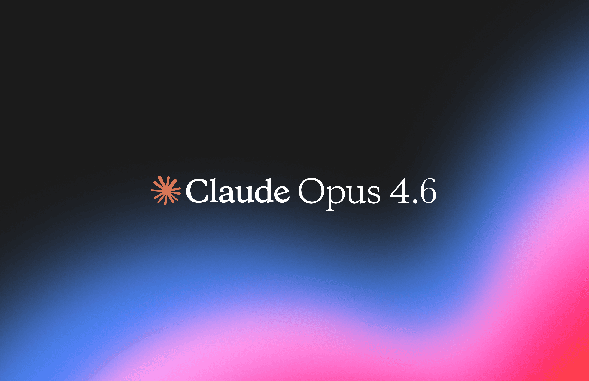
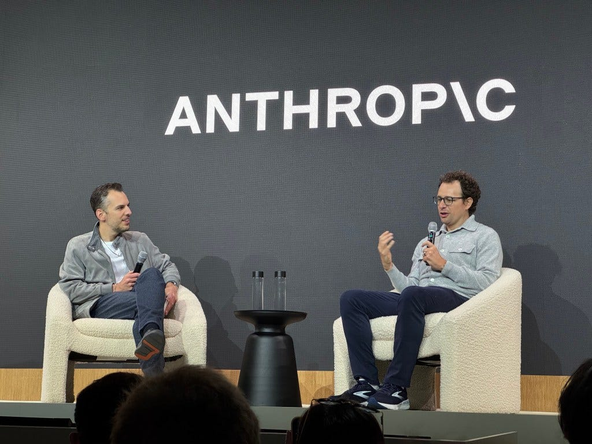

Introducción
En términos generales, Claude es un software que funciona como Inteligencia Artificial de tipo Modelo de Lenguaje, es decir, un sistema capaz de comprender y generar lenguaje natural a partir de entrenamiento con muchísimos textos, al estilo de ChatGPT, Gemini, etc.
En específico, Claude es una familia de grandes modelos de lenguaje (Large Language Models), ya que no es solo un modelo en concreto sino varias versiones con distintas capacidades.
Es desarrollado por Anthropic, una empresa emergente de investigación y desarrollo de IA con sede en San Francisco, EEUU. Esta compañía se ha consolidado como una de las más relevantes en el ámbito de la inteligencia artificial, siendo Claude uno de los modelos mejor valorados a día de hoy por desarrolladores y otras empresas debido a su eficiencia como también el enfoque en seguridad.